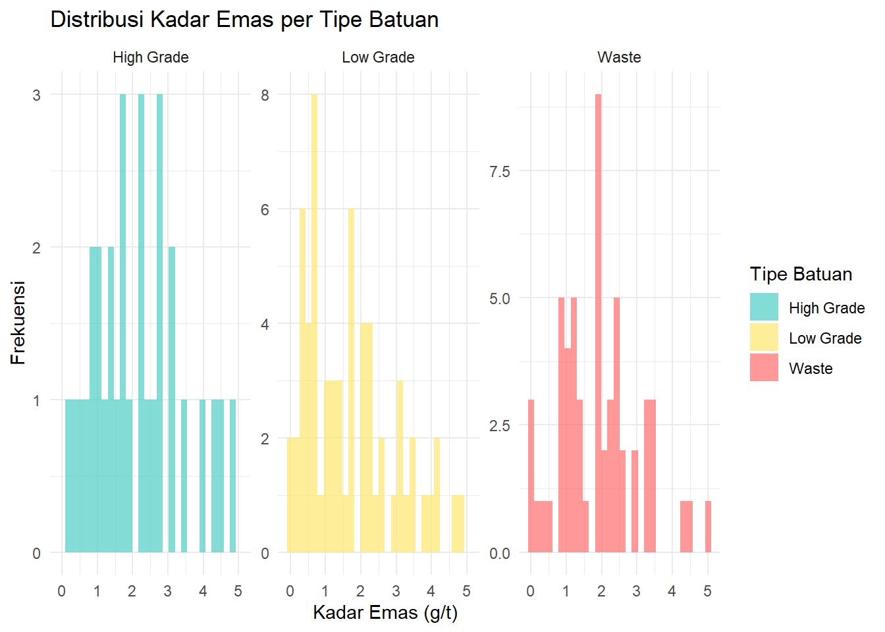

library(plotly)
library(dplyr)
# Simulasi data lubang bor yang lebih kompleks
set.seed(456)
complex_data <- tibble(
drill_hole = rep(paste0("DDH-", 1:5), each = 30),
depth_m = rep(seq(0, 145, by = 5), 5),
au_gt = abs(rnorm(150, mean = 1.2, sd = 0.8)) +
ifelse(depth_m > 50 & depth_m < 100, 2, 0),
rock_type = sample(c("Waste", "Low Grade", "High Grade"), 150,
replace = TRUE, prob = c(0.4, 0.4, 0.2)),
recovery_pct = 85 + rnorm(150, 0, 5)
)
# Buat plot interaktif
p <- complex_data %>%
ggplot(aes(x = depth_m, y = au_gt, color = rock_type, size = recovery_pct)) +
geom_point(alpha = 0.7) +
scale_color_manual(values = c("Waste" = "#FF6B6B",
"Low Grade" = "#FFE66D",
"High Grade" = "#4ECDC4")) +
scale_size_continuous(range = c(2, 8)) +
labs(
title = "Analisis Kadar Emas vs Kedalaman (Multi-Hole)",
x = "Kedalaman (m)",
y = "Kadar Emas (g/t)",
color = "Tipe Batuan",
size = "Recovery (%)"
) +
theme_minimal() +
facet_wrap(~drill_hole, scales = "free")
# Konversi ke plotly untuk interaktivitas
ggplotly(p, tooltip = c("x", "y", "colour", "size"))Memvisualisasikan Data Geologi dengan GeoDataViz
R
Shiny
Visualisasi
Tools
Panduan lengkap menggunakan aplikasi GeoDataViz untuk analisis dan visualisasi data lubang bor
Pengenalan GeoDataViz
GeoDataViz adalah aplikasi R Shiny yang saya kembangkan sebagai workbench open-source untuk visualisasi, analisis, dan validasi data geologi. Aplikasi ini dirancang khusus untuk menangani data lubang bor dan memberikan insights yang valuable untuk decision-making di lapangan.
Fitur Utama
1. Upload dan Validasi Data
- Import data dari berbagai format (CSV, Excel)
- Validasi otomatis struktur data
- Deteksi anomali dalam dataset
2. Visualisasi 3D Interaktif
- Plot lubang bor dalam ruang 3D
- Kontrol interaktif untuk rotasi dan zoom
- Color coding berdasarkan parameter geologi
3. Analisis Statistik
- Distribusi kadar mineral
- Korelasi antar variabel
- Summary statistics per domain geologi
Demo Visualisasi Interaktif
Mari kita buat contoh visualisasi interaktif yang menunjukkan kekuatan R dalam analisis data geologi:
Workflow Analisis Data
Step 1: Data Import dan Cleaning
# Contoh workflow data cleaning
library(tidyverse)
# Import data
raw_data <- read_csv("drill_data.csv")
# Basic cleaning
clean_data <- raw_data %>%
# Remove outliers
filter(grade > 0, grade < 50) %>%
# Standardize naming
rename_with(tolower) %>%
# Handle missing values
drop_na(critical_columns)Step 2: Exploratory Data Analysis
# Analisis distribusi kadar
complex_data %>%
ggplot(aes(x = au_gt, fill = rock_type)) +
geom_histogram(bins = 30, alpha = 0.7, position = "identity") +
scale_fill_manual(values = c("Waste" = "#FF6B6B",
"Low Grade" = "#FFE66D",
"High Grade" = "#4ECDC4")) +
labs(
title = "Distribusi Kadar Emas per Tipe Batuan",
x = "Kadar Emas (g/t)",
y = "Frekuensi",
fill = "Tipe Batuan"
) +
theme_minimal() +
facet_wrap(~rock_type, scales = "free_y")
Best Practices
- Selalu validasi data sebelum analisis
- Gunakan visualisasi interaktif untuk eksplorasi
- Dokumentasikan semua asumsi dalam analysis
- Version control untuk reproducibility
Kesimpulan
GeoDataViz memberikan platform yang powerful untuk analisis data geologi dengan pendekatan modern. Kombinasi R, Shiny, dan visualisasi interaktif memungkinkan geologist untuk:
- Mengidentifikasi pola dengan lebih cepat
- Membuat keputusan berbasis data
- Mengkomunikasikan hasil dengan efektif
Tertarik untuk mencoba? Hubungi saya untuk akses ke aplikasi atau konsultasi!
Next post: Geostatistik dengan R - Dari Variogram hingga Kriging 📊⛏️